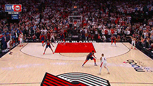

Hobbies & Interests
NBA
I got into basketball when the Blazers made it to the Western conference finals in 2019. Portland's love for the Trail Blazers is contagious. I couldn't resist jumping on the bandwagon.
Favorite Players
- Damian Lillard
- Ja Morant
- Shai Gilgeous-Alexander
Formula1

My appreciation for Formula1 was launched by the "Drive to Survive" series on Netflix. The drivers race at speeds over 200 mph and are often seperated by fractions of a second. It's truly fascinating to watch.
Favorite Drivers
- Lando Norris
- Daniel Ricciardo
- Sebastian Vettel
Film

My love for cinema began when I got my first job at a movie theater in 2006. I was able to see every new release for free. Shortly after, I took a film study course in school and really grew to admire the intricacies of film.
Favorite Directors
- Quentin Tarantino
- Christopher Nolan
- Paul Thomas Anderson